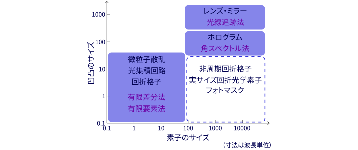
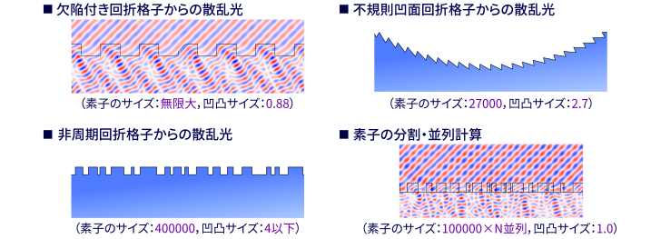

散乱解析
散乱シミュレーションとは、照射された光や電波が物体でどのように散乱されるかをコンピュータで計算することです。光学素子の設計や光計測技術、レーダー、無線通信技術の開発に必須の解析です。散乱体の形状やスケール、目的のデータなどに応じて、様々な解析手法が考案されています。
微細構造を含む狭い範囲の解析や、微細構造がない素子の広範囲の解析については解析方法が確立しており、広く利用されています。しかし、大面積の素子全面に微細構造が加工されたような素子については、計算に時間がかかりすぎるため、スーパーコンピュータを使っても、解析は大変困難です。
この研究室では、新たな計算アルゴリズムを多数考案し、これまで不可能であった規模のシミュレーションを可能にしました。以下の解析例は、すべてパソコン1台で計算したものです。
複雑な数式や計算プロセスを簡潔に記述でき、かつ高速に動作する独自のプログラミング言語「Aqualis」の開発も行っています。